/
E = | G p z dV
/
Of course, Evolver cannot actually integrate over bodies,
so it evaluates the gravitational energy with the
equivalent surface integral (the Divergence Theorem),
/
E = | G p z2 dx dy
/
with proper regard to surface orientation, i.e. Evolver
does the surface vector integral
/
E = G p | (0,0,z2).N dA
/
where N is the unit normal vector oriented outward from the
body and dA is surface area element.
The consequences of this implementation are much like
those for volume: vertical facets and horizontal
facets at z = 0 do not contribute to the gravitational
energy calculation and may be omitted without compensation,
but otherwise omitted facets on constraints must be
compensated for by adding terms to the constraint
energy integral.
The value of the gravitational constant defaults to 1. The user may change the value by including a statement in the top of the datafile, say
gravity_constant 980if working in the cgs system, or at runtime with the G command, which will prompt you:
Enter command: G Gravity is now ON with gravitational constant 1.000000. Enter new constant (0 for OFF): 980or by assigning a value to the internal variable gravity_constant:
Enter command: gravity_constant := 980The density of a body may be set in the datafile by adding a density attribute to the body definition,
bodied 1 1 2 3 4 5 volume 1 density 8.5or by assigning a value at runtime:
Enter command: body[1].density := 8.5The body density defaults to zero.
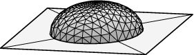
Example: Droplet on a surface: The datafile mound.fe is suitable for experimenting with gravity. It has the initial gravity as 0 and body density as 1. Run mound.fe, and evolve to a nice hemisphere without gravity,refine edge where on_constraint 1 g 10 r g 10 r g 20 hessian hessian
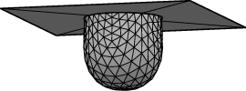
Now use the 'G' command to set gravity to 5. Evolve with say "g 20; hessian; hessian; hessian". The mound flattens out, but keeping its contact angle of 90 degrees.The same file can be used to model a drop hanging from the ceiling by setting gravity negative. Use 'G' to set the gravity to -5 and turn the image upside down in the graphics window. Evolve with "g 50" and watch the drop fall. Actually, -5 is too much for stability, and you will never converge.
bodies 1 1 2 3 4 5 pressure 1.4Internally, Evolver implements the pressure in terms of the work done in transferring fluid from the constant pressure reservoir, i.e. by adding an energy term -pressure*volume. Thus positive pressure wants to increase the volume in order to lower the energy. The body will expand until surface tension or other forces counteract the pressure. Of course, if the pressure is too large, the surface could expand indefinitely..
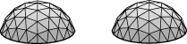
Example: Bubble pipe with pressure. The datafile presspipe.fe is the same as doublepipe.fe, except with prescribed pressure instead of prescribed volume. The maximum pressure state is when the two bubbles are hemispheres, where the pressure is 2 (since the pressure in a sphere is 2*tension/radius). So the datafile starts with a prescribed pressure of 1. Run presspipe.fe, evolve, and try increasing the pressure withset body pressure 1.5 ... set body pressure 2 ...At the critical pressure 2 it is hard to say whether the discete surface in Evolver will be stable. If you increase the pressure beyond 2, you should see the bubbles expand indefinitely as you evolve.
NOTE: "Pressure" in Evolver in the presence of gravity always refers to the pressure at z = 0. Thus in the case of prescribed pressure, the infinite reservoir is located at z = 0, and in case of prescribe volume the reported pressure is at z = 0.
I refer you to the
online documentation
for the full syntax in specifying
method instances and quantities. Here, I will just give some basic syntax
and examples. Most named quantities have just one component method instance,
and so the quantity and instance definition are combined. Here are examples
of the four common types of quantities mentioned above:
Scalar integral of the function y over edges as an energy:
quantity yint energy method edge_scalar_integral scalar_integrand: yVector integral of the vectorfield (-y,z,x) over edges as a fixed quantity:
quantity george fixed=2 method edge_vector_integral vector_integrand: q1: -y q2: z q3: xScalar integral of the function z over facets as an info_only quantity:
quantity fweight info_only method facet_scalar_integral scalar_integrand: zVector integral of the vectorfield (x2/2),0,0) over facets as a conserved quantity:
quantity xcenter conserved method facet_vector_integral vector_integrand: q1: x^2/2 q2: 0 q3: 0The tokens q1, q2, and q3 are used to indicate the vectorfield components. Some people wonder why e1, e2, and e3 are used for constraint energy components, c1, c2, and c3 for constraint content components, and q1, q2, and q3 for quantity vectorfield components instead of one uniform token. Well, it seemed a good idea at the various times I was adding these features, and I don't feel like changing it now and breaking existing datafiles.
The set of elements a method or quantity applies to may be specified in several ways:
set facet xcenter where color == red unset edge yint
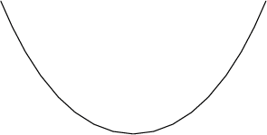
Example: String catenary. This is the classic problem of minimizing the gravitational energy of a fixed-length cable hanging between two towers. The datafile is given below. Note that the arc length quantity uses the method edge_length instead of edge_scalar_integral; since edge length is so common, there is a separate hard-coded method for it, which executes faster since it doesn't have to interpret integrand formulas. Also note the tensions of the edges have been set to zero, since this is not a soap-film-like string, and we don't want to include the default tension energy.// catenary.fe // String of fixed length hanging between supports, // minimizing gravitational energy. space_dimension 2 string quantity grav energy method edge_scalar_integral global scalar_integrand: y quantity arclength fixed = 3 method edge_length global vertices 1 -1 1 fixed 2 0 0 3 1 1 fixed edges 1 1 2 tension 0 2 2 3 tension 0Run catenary.fe, and evolve with "r; g 5; r; g5; r; g 5;". To see the current values of the quantities, you can use the 'v' command:
Enter command: v
Quantity target value actual value pressure
grav --------- 1.18616662825846
arclength 3 3.00000000008196 -0.619916847985151
The pressure is the Lagrange multiplier for a fixed quantity. The physical
interpretation of the pressure depends on the nature of the fixed quantity.
In general, it is the rate of change of energy of the system as a function
of the constraint value, so here it would be the tension of the cable at
y = 0 (if the cable were to come down the towers and be anchored at y=0).
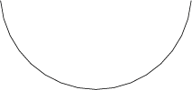
Example: String suspension bridge. This is like the catenary, except the cable weight is neglected and instead the weight is of a uniform roadway. So the mass of a bit of roadway is proportional to dx, and its gravitational energy is y dx (neglecting a constant gravitational potential energy depending on the length of the vertical suspension cables). So this just requires modifying catenary.fe to change the gravitational energy from a scalar integral to a vector integral:// suspension.fe // String of fixed length hanging between supports, // minimizing gravitational energy of uniform roadway. space_dimension 2 string quantity grav energy method edge_vector_integral global vector_integrand: q1: y q2: 0 quantity arclength fixed = 3 method edge_length global vertices 1 -1 1 fixed 2 0 0 3 1 1 fixed edges 1 1 2 tension 0 2 2 3 tension 0Run suspension.fe and evolve.
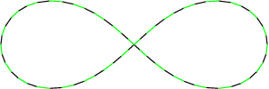
Example: String elastic bending - squared curvature. Suppose one had a long, flexible rod and bent it into a figure-8 shape. The energy is the elastic bending energy, which is proportional to the integral of the square of the curvature along the rod. Recall that the curvature of a curve is the rate of change of the angle of the tangent vector with respect to arclength. Evolver has a special method, sqcurve_string, that calculates this quantity. It is used in the datafile elastic8.fe:// elastic8.fe // Elastic string in the shape of a figure 8. string space_dimension 2 scale_limit 0.1 // else blows up on first iteration quantity bending_energy energy method sqcurve_string global quantity arclength fixed = 14 method edge_length global vertices 1 2 0 2 1 1 3 0 0 4 -1 -1 5 -2 0 6 -1 1 7 0 0 8 1 -1 edges 1 1 2 tension 0 2 2 3 tension 0 3 3 4 tension 0 4 4 5 tension 0 5 5 6 tension 0 6 6 7 tension 0 7 7 8 tension 0 8 8 1 tension 0It is useful in evolving this model to see the individual edges and make sure they stay evenly spread out. The file zebra.cmd has a script "zebra" in it that colors edges alternately black and white. Try evolving like this:
read "zebra.cmd" zebra g r zebra g g r zebra g 10 hessian r zebra g 10 hessian hessian
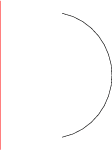
Example: Surface of revolution. The string model can be used to compute surfaces of revolution, such as the catenoid and ring blob considered earlier. The relevant area and volume just have to be expressed as line integrals, which is a standard calculus exercise. The file catrev.fe models a ring of liquid outside a cylinder, as did catbody.fe. Here is the datafile:// catrev.fe // Liquid ring around a cylinder, done in the string model as // a surface of revolution. // The axis of revolution is the y axis. string space_dimension 2 parameter radius = 1 parameter height = 1 quantity ringarea energy method edge_scalar_integral scalar_integrand: 2*pi*x quantity ringvol fixed = 3 method edge_vector_integral vector_integrand: q1: 2*pi*x*y q2: 0 vertices 1 radius height fixed 2 radius -height fixed 3 0 1.2*height fixed // display of axis 4 0 -1.2*height fixed edges 1 1 2 ringarea ringvol tension 0 2 3 4 fixed no_refine color red tension 0 // display of axisNotice that this time the quantities are not global, since we do not want to apply them to the edge for displaying the axis. Also, the choice of integrand for ringvol does the "shell" method, rather than the "disk" method, of slicing, so it gives the volume outside the fixed endpoints.
Run catrev.fe, and evolve thusly:
r g 5 r g 5 r g 5 ringvol.target := 5 g 10 ringvol.target := 10 g 10A big advantage of doing surfaces of revolution this way is that it is much easier to get high numerical accuracy. A disadvantage is that you do not find instabilities that are essentially three-dimensional. Thus no matter how large you make the volume, this surface remains stable, unlike catbody.fe.
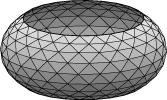
parameter ang_vel = 1 // radians per time unit quantity spin_energy energy method facet_vector_integral global vector_integrand: q1: 0 q2: 0 q3: -1/2*(x^2 + y^2)*ang_vel^2*zRun catspin.fe, which has an initial angular velocity of 1. Refine and evolve until you get a nice shape. Check it stability by using eigenvalues. Increase ang_velocity until it becomes unstable. Use hessian_menu to check the mode of instability. Is it a circularly symmetric mode, where a ring threatens to pull off, or an asymmetric mode?
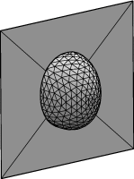
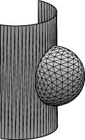
parameter radius = 1 // radius of the rod // body volume in cylindrical coordinates quantity blobvol fixed = 1 method facet_vector_integral vector_integrand: q1: 0 q2: 0 q3: z*x // area in cylindrical coordinates, using facet_general_integrand, // for which (x4,x5,x6) represents the normal vector quantity blobarea energy method facet_general_integral scalar_integrand: sqrt(x^2*(x4^2 + x6^2) + x5^2)Note the area cannot be represented as a scalar integral of a function of position; the scalar integrand also involves the normal vectors. The method facet_general_integral is the appropriate method to use for such scalar integrals. It represents the components of the normal vector as (x4,x5,x6). For proper dimensional behavior, the scalar integrand should be homogeneous of degree 1 in (x4,x5,x6).
Run rodblob.fe, and evolve:
refine edge where on_constraint 1; g 12; r; g 12; V; V; r; g 21; hessian; hessian;It looks a lot like the mound example, but it looks distorted due to working in cylindrical coordinates. If you want to see what the surface looks like back in Euclidean coordinates after you have evolved it, run "to_rod"; this is a script included in rodblob.fe. To get back to cylindrical coordinates, run "to_flat".
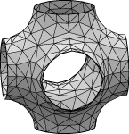
The datafile pcellbox.fe contains one cubic unit cell of the P surface, which is a triply periodic minimal surface found several places in nature. Run pcellbox.fe. It is set up to initially use area as its energy. Evolve thusly:
l .4 g 5 t .1 g 5 r g 10 hessian hessian hessianNote that hessian reported 7 negative eigenvalues, so the surface is rather unstable. But it is symmetric enough and our evolution quick enough that it converged to an equilibrium. Not all surfaces are that cooperative. So let us see how using squared mean curvature works. The datafile pcellbox.fe has a quantity defined in it:
quantity sqmean energy modulus 0 method star_perp_sq_mean_curvature globalThe "modulus" is an overall multiplier of the quantity value that you can use to control the degree of its contribution to the energy; the default value is 1. Here I have set it up so it is turned off at the start. There are several squared mean curvature methods implemented in Evolver, having slightly different numerical properties. My current favorite is the one called star_perp_sq_mean_curvature. It is capable of handling surfaces that have flat constraints as boundaries; it treats the curvature at the constrained vertices as if the constraint were a mirror symmetry plane. To turn off area minimization and turn on squared mean curvature minimization, do this:
set facet tension 0; sqmean.modulus := 1; recalc;The 'v' command shows that there is still some curvature. So evolve:
g 10; eigenprobe 0; hessian_seek; hessian_seek; hessian_seek; hessian_seek;Note that the surface is stable; no negative eigenvalues whatsoever.

The datafile conserved.fe has a cube with conserved center of mass quantities:
quantity xcenter conserved method vertex_scalar_integral global scalar_integrand: x quantity ycenter conserved method vertex_scalar_integral global scalar_integrand: y quantity zcenter conserved method vertex_scalar_integral global scalar_integrand: zVertex_scalar_integrand is just a fancy way of saying evaluate a scalar function at a given vertex. I did center of mass of vertices rather than of a full body since the vertex version is much faster to compute, and it does just as well in suppressing translational degrees of freedom.
Run conserved.fe and evolve "g 5; r; g 5 ; r; g 5; hessian; hessian;". Then do "linear_metric" to get properly scaled eigenvalues. Then do "ritz(0,10)", and you will see the small eigenvalues have vanished:
Enter command: ritz(0,10) Eigencounts: 0 <, 0 ==, 190 > 1. 10.4193280487658 2. 10.4193280487659 3. 10.4193280487659 4. 10.6545349368203 5. 10.6545349368204 6. 25.762396629945368 7. 26.159462298242609 8. 26.1594623055484 9. 26.1594629335960 10. 26.2512678335075Compare to what you would get from the same evolution on cube.fe:
Enter command: ritz(0,13) Eigencounts: 0 <, 0 ==, 193 > 1. 0.072568783991381 2. 0.072568783991406 3. 0.072568783991409 4. 10.419281312254677 5. 10.419281312254673 6. 10.419281312254752 7. 10.654709896481144 8. 10.654709896481151 9. 25.762410306624890 10. 26.159636850138284 11. 26.1596368502474 12. 26.1596368540759 13. 26.2882112875744Note we have gotten rid of the low eigenvalues without disturbing the others.
Conserved quantities can also eliminate rotational degrees of freedom,
even though there is no such thing as an angular center of mass.
Just write your conserved quantity as if there were.
Show grid lines?
This is asked if you are graphing a 2D surface rather than a string model.
If you reply 'y', all
facet edges will be plotted. If 'n', only special edges will be plotted
(triple junctions, borders, etc.; this can be controlled with the "show edges"
command). Default 'n'. The postscript command uses the "gridflag" toggle to
control this.
Do colors?
If you reply 'y', edges and facets will be plotted with their colors
and shading. If 'n', then all edges are plotted as black, and all facets as
white with shading. Default 'n'. The postscript command uses the "pscolorflag"
toggle to control this.
Do labels? (i for ids, o for originals)
This PostScript P 3 command subprompt gives you a chance to put numeric
labels on vertices, edges, and facets, which is useful for debugging or
modifying a datafile or putting in tutorials.
Edge labels are slightly displaced toward the head
of the edge, and facet labels are signed according to which side of the
facet is visible. Choose 'i' or 'y' for the current element id, or 'o'
for the original element number. If you don't want any labels,
just hit RETURN. The postscript command uses the "labelflag" toggle to
control this.
Enter file name (.ps will be added):
Give the name of the PostScript output file. A ".ps" extension will be added
if ".ps" or ".eps" is missing. Not a good idea to just hit RETURN, since that
will produce the file ".ps".
Now that you have some idea of what is happening, it is time for you to try it. Since you will be creating a file, you should be in a directory where you have write permission (or know the path to such a directory). Run quad.fe and display it. Turn it so it looks nice. Give the command "P 3". Answer the prompts:
Enter command: P 3 Show grid lines? y Do colors? n Do labels? (i for ids, o for originals) n Enter file name (.ps will be added): quadNow you can go find the file quad.ps and display it with any PostScript viewer. Windows users should be able to just click on it to invoke Ghostview. Linux users can run ghostview (?), or the "display" program from ImageMagick. The page dimensions for the PostScript file put the image in an 8 x 8 inch box at the lower left of the page, so you may have to scroll down your viewer to see the image.
The linewidth of PostScript edges may be controlled by the user. Widths are relative to the image size, which is 3 units square. If the real-valued edge extra attribute ps_linewidth is defined, that value is used as the edge width. Otherwise some internal read-write variables are consulted for various types of edges, in order:
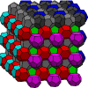
Cutting file size. Postscript files of highly refined surfaces can get rather large. By default, Evolver draws all facets, but many of these are hidden by foreground facets. To eliminate the unseen facets from the file, use the "visibility_test on" command. For example, on a view of a twice-refined 512-cell Weiare-Phelan foam, visibility_test cut the file size from 37,567,443 to 2,974,528 bytes. Be sure to check your results, as it is just barely possible my implementation of the algorithm has bugs in it.
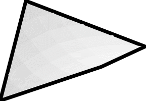
Notched borders. Sometimes you see a notched border on a PostScript file, as shown at right. I have exaggerated the border thickness to make it more apparent. What is happening is that facets and edges are drawn back to front, and some foreground facets are cutting into the border. Of course you don't want these notches to spoil your beautiful pictures. So I have written a script in band.cmd that creates a band of colored facets along given edges, to replace the edge-drawing the Evolver PostScript routine does. This may seem like finicky overkill, but remember PostScript is a geometric language of high precision, and you images can be printed in journals at 2400 dpi or higher, where the slightest flaws can become visible.
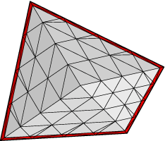
As an example, run quad.fe and refine a couple of times. Then do this:Enter command: read "band.cmd" Enter command: bandwidth := 0.05 Enter command: set edge inband 1 where fixed Enter command: bandcolor := red Enter command: makebandNow you should have a border of new red facets, as shown at right.
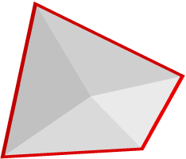
The proper way to convert this to PostScript is to turn off all edges with "show edge where 0" and just let the colored facets outline your surface.Enter command: show edge where 0 Enter command: P 3 Show grid lines? n Do colors? y Do labels? (i for ids, o for originals) n Enter file name (.ps will be added): quadband
Of course, the "makeband" command destroys your previous surface,
so save your surface with the 'd' or "dump" command
doing "makeband". Note: if the "band" command has trouble,
try doing "makeband" in stages on different sets of lines,
so it's not trying to do crossing edges. When doing several
stages, be sure to set inband to 0 on already done edges.
Makeband can handle borders that are wider than facets.
When converting PostScript files to gif or jpeg or some other pixel-based format, it is wise to use whatever antialiasing or subpixel sampling is available to smooth out lines and edges. For example, with ghostscript use the -dGraphicsAlphaBits=4 option. BUT ghostscript seems to render improperly with GraphicsAlphaBits set higher than 1; it leaves small gaps between facet and background facets and edges show through, giving a transparency effect. Try viewing the file cattrans.ps in my fe directory. Linux users can compare
gs -dGraphicsAlphaBits=4 cattrans.feto
gs -dGraphicsAlphaBits=1 cattrans.feWindows users should use gswin32 instead of gs. And view cattrans.ps with whatever other postscript viewer you have. If anybody has a solution to this other than rendering a larger image at GraphicsAlphaBits=1 and seperately reducing the image, I would like to hear. GhostView and ImageMagick seem to use GraphicsAlphaBits=4 by default, giving semi-transparent images.
The output PostScript files have bounding boxes
defined in them that tightly bound the object. If you
want the bounding box to define the full graphics screen
as you see it, use the "full_bounding_box on" command.
You can make movies by creating multiple PostScript files, one for each frame, and using something like ImageMagick's convert utility to make the movie. Usually, producing multiple PostScript files is done by writing an Evolver script that goes through the desired transformations and writes out the files.
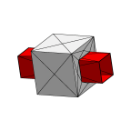